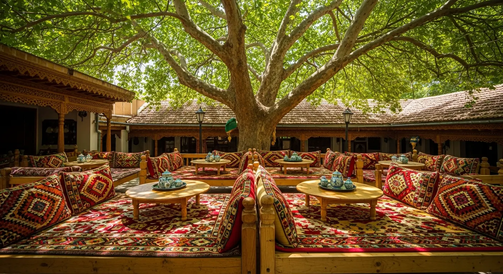
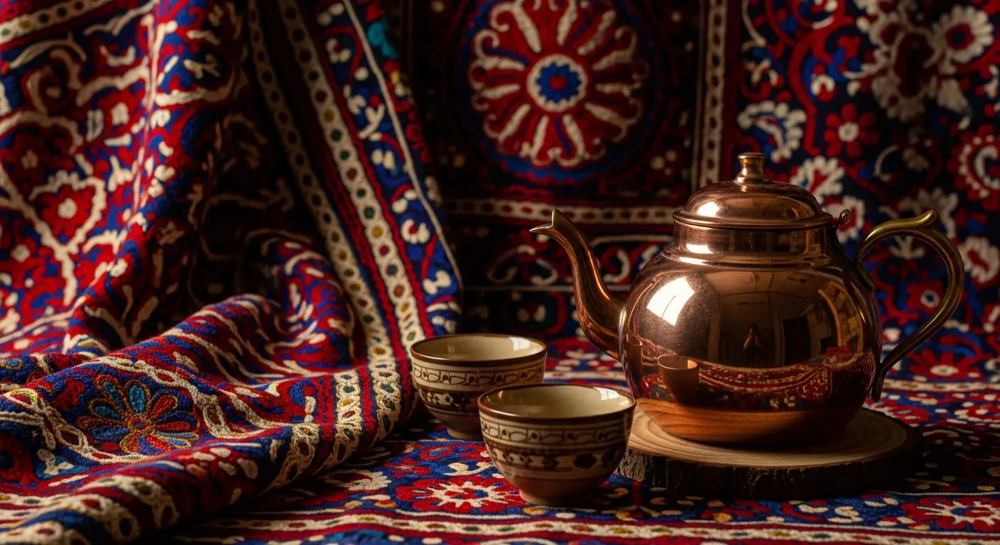
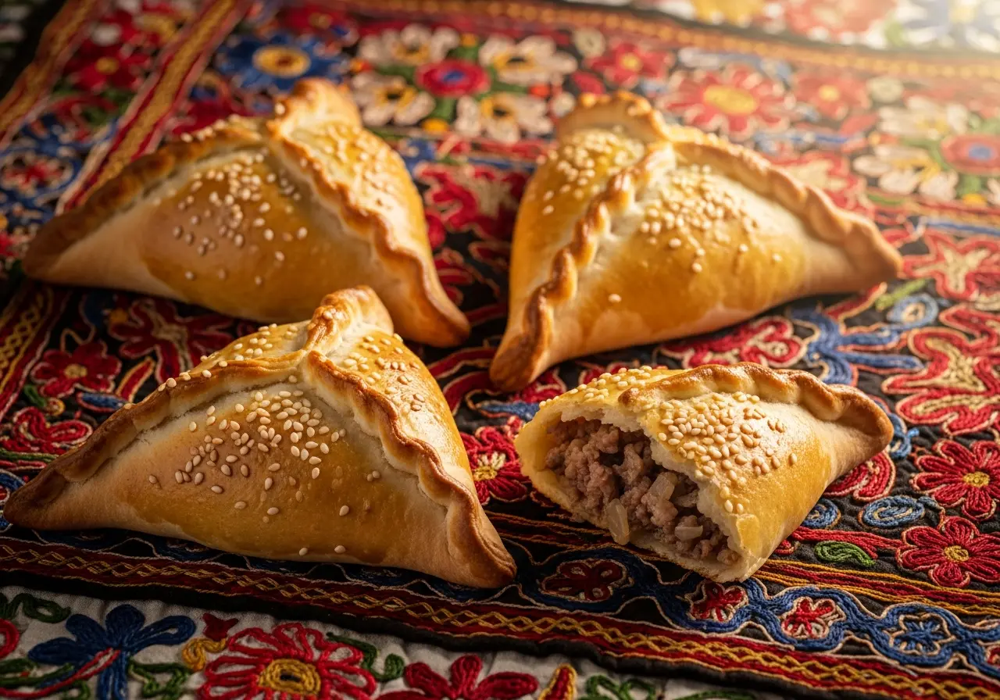
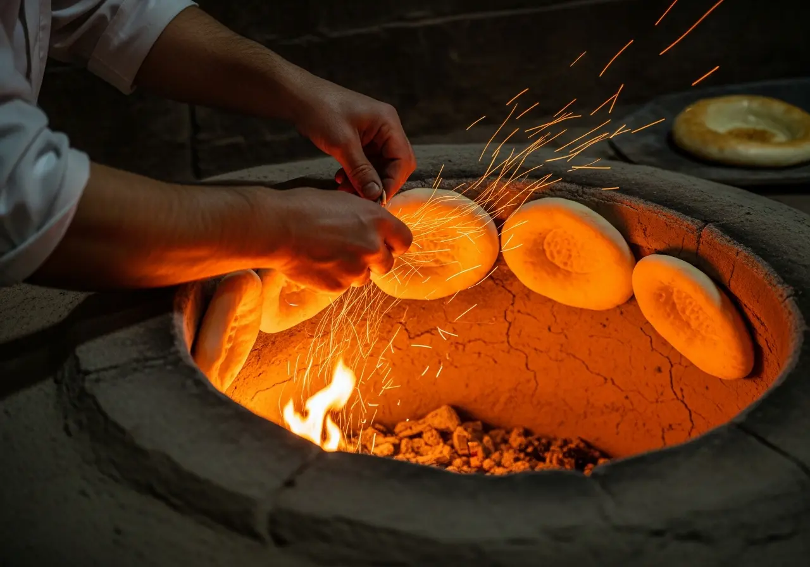
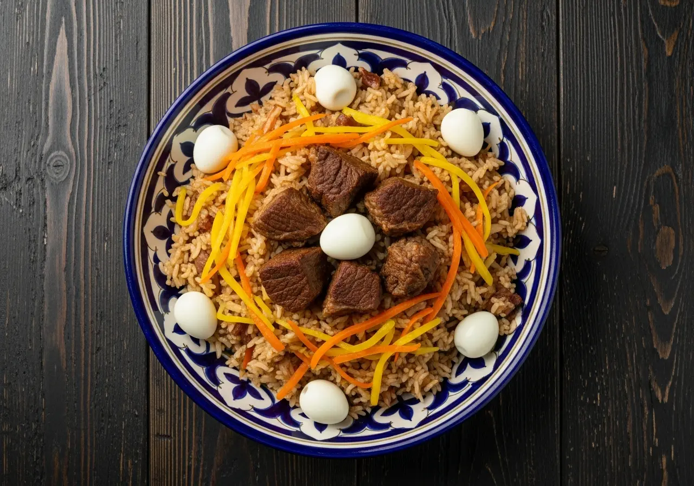
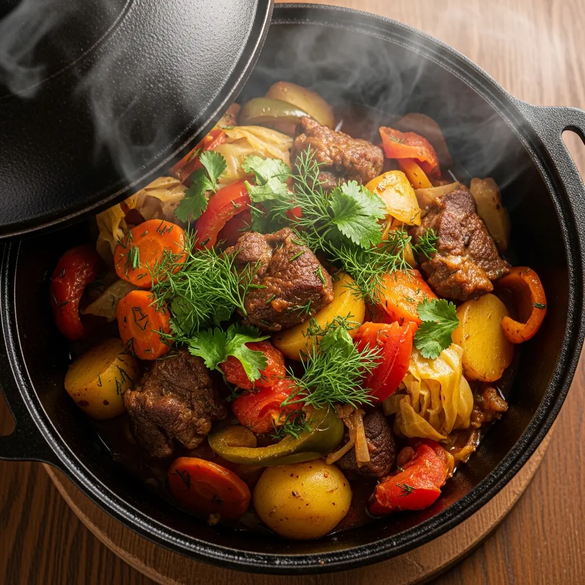
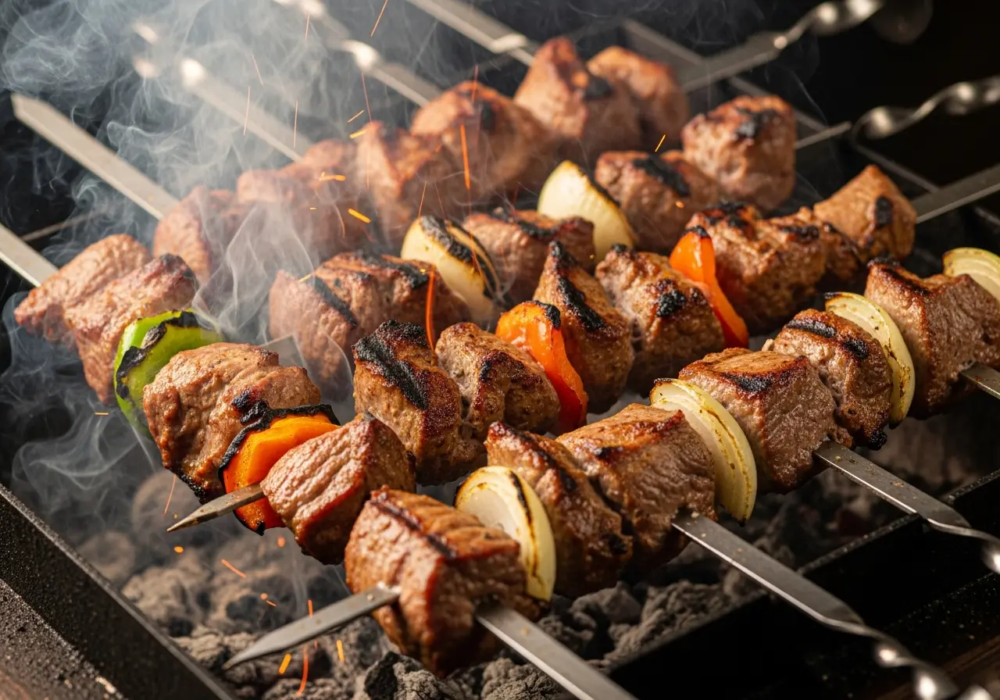
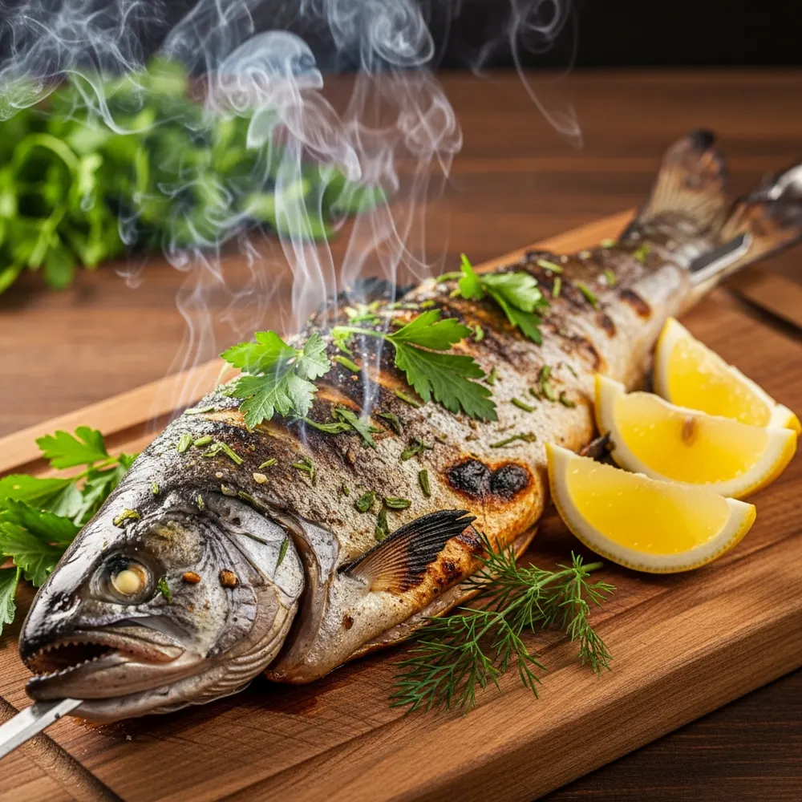
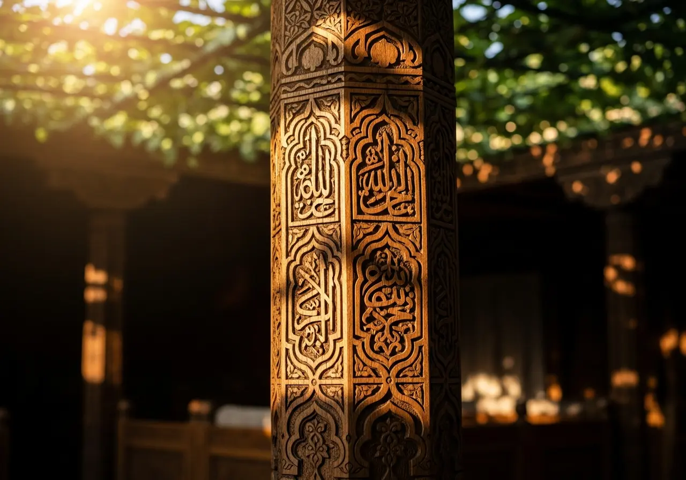
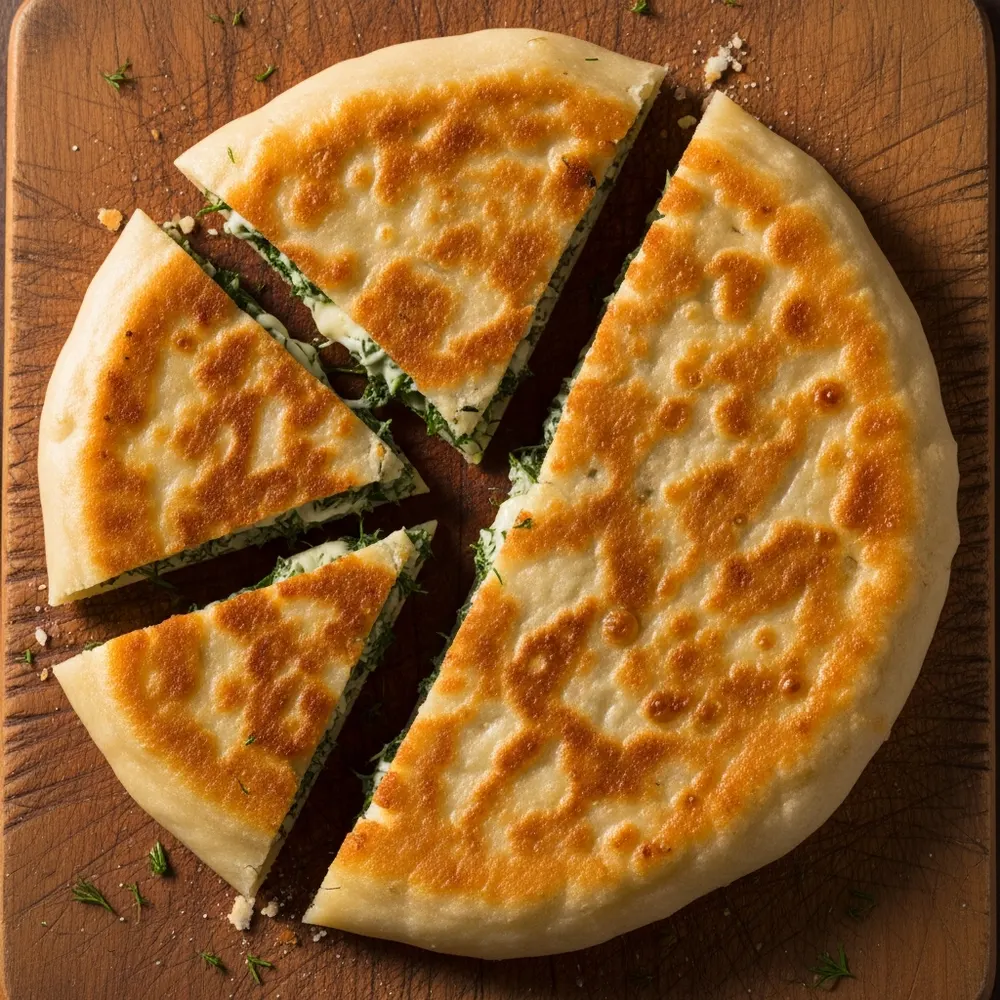

An'anaviy retseptlar
Buvilarimizdan o'tgan asl o'zbek retseptlari, hech qanday qisqartirishsiz.

Samarqandning yuragida
Qadimiy chinor daraxti soyasida joylashgan oilaviy choyxonamizda haqiqiy an'anaviy ta'mlardan bahramand bo'ling.
"Chinor" — bu shunchaki restoran emas, bu uzoq yillik tarixga ega bo'lgan mehmondo'stlik maskani. Bizning maqsadimiz har bir mehmonga o'z uyidagidek qulaylik va iliqlikni ulashish.
Olovda pishgan shashlikning xushbo'y hidi, tandirdan endigina uzilgan issiq somsa va qadimiy retsept asosida tayyorlanadigan milliy taomlarimiz sizni befarq qoldirmaydi. Dasturxonimizga marhamat!



Nima uchun Chinor?
Buvilarimizdan o'tgan asl o'zbek retseptlari, hech qanday qisqartirishsiz.
Har kuni ertalab yoqiladigan tandirimizda non, somsa va kabob pishiriladi.
Suzanali bezatilgan keng so'rilar — to'y, yubiley va oilaviy yig'inlar uchun.
Toshkent bo'ylab issiqligicha yetkazib berish — 60 daqiqa ichida.
Choyxonamiz ichidan, qozonimiz oldidan, dasturxonimiz ustidan






Tadbirlar va kechalar
Har hafta — yangi taom, yangi ovoz, yangi xotira. Bizning tadbirlarimizda o'zbek madaniyatining jonli nafasini his etasiz.
Har juma, 12:00 — 15:00
Maxsus tayyorlangan to'y oshi, jonli ashulalar bilan.
Har shanba, 19:00
Dutor va do'mbira sadolari ostida shom dasturxoni.
Buyurtma asosida
120 kishiga mo'ljallangan zal, milliy bezak va xizmat.
★★★★★"Samarqandagi eng mazali palov shu yerda tayyorlanadi. Oilamiz bilan har yakshanba kelamiz. Xizmat ko'rsatish ham a'lo darajada."
★★★★★"Chinor ostidagi salqin havo, issiq choy va manti... Xuddi bolaligimdagi buvimning hovlisidagidek his qildim o'zimni. Judayam shinam joy."
★★★★★"Xorijlik hamkorlarimizni shu yerga olib keldik. Milliy taomlarimiz ularga juda manzur bo'ldi. Ayniqsa tandir somsa hammaga yoqdi."
Oila a'zolaringiz va do'stlaringiz bilan go'zal oqshomni o'tkazish uchun joy band qiling
Samarqand yuragida, qulay va serqatnov joyda
AL Buxoriy ko'chasi, 42-uy, Samarqand
Payariq tumani
Hafta oxirlari va bayram kunlari uchun oldindan band qilish tavsiya etiladi. Oddiy kunlari ham telefon orqali oson band qilish mumkin.
Ha, Toshkent bo'ylab yetkazib beramiz. Buyurtma 60 daqiqa ichida, issiqligicha yetkaziladi.
Albatta. 120 kishilik katta zalimiz mavjud. Maxsus menyu va milliy bezaklar bilan.
Ha, bizda dimlama, mosh kichiri, mevali salatlar va boshqa go'shtsiz taomlar mavjud.
Bolalar uchun alohida menyu va o'yin maydonchasi bor.